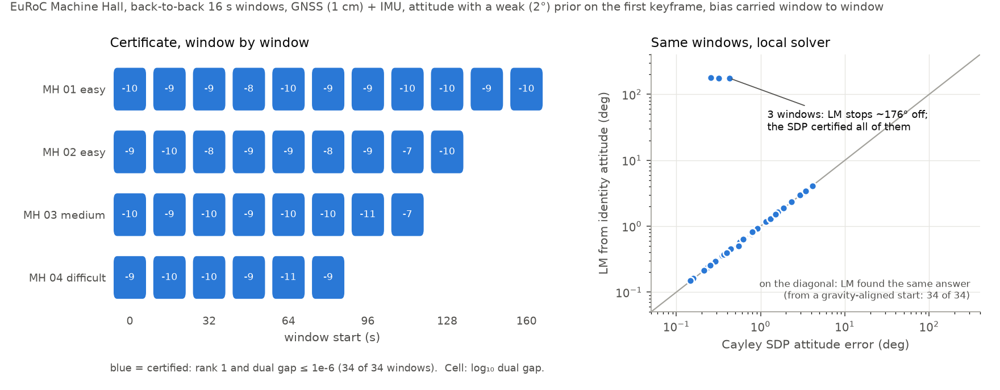
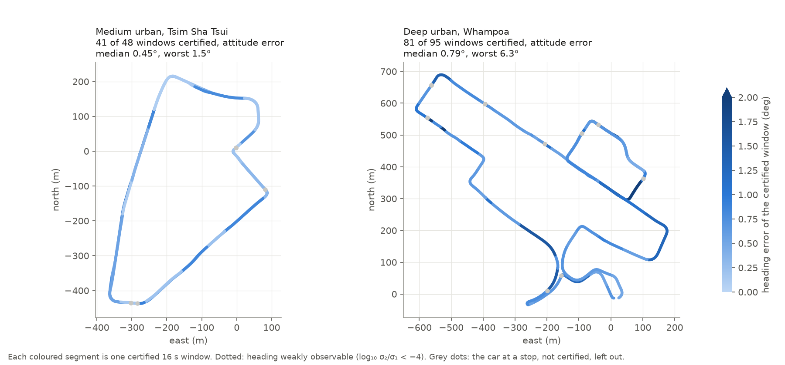
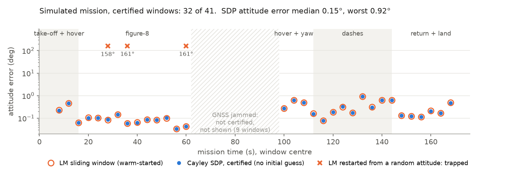

A QCQP-Representable IMU Pre-Integration Factor for Certifiable State Estimation
Nonlinear optimization · QCQP · Semidefinite relaxation · IMU–GNSS smoothing
Robust Autonomy Lab, Northeastern University · arXiv 2026
Recorded EuRoC + UrbanNav IMUSimulated GNSS fixes
- Question
- Can an IMU–GNSS smoother recover a solution without trajectory initialization, and verify its optimality afterwards?
- Setting
- Recorded EuRoC and UrbanNav IMU, back-to-back 16 s windows; GNSS fixes simulated from ground truth
- Certified when
- Numerically rank one, relative candidate-to-dual gap ≤ 10−6, residuals within solver tolerance
- Comparator
- Levenberg–Marquardt on the exponential-map formulation, from gravity-aligned and identity starts
Overview
Conventional inertial state estimation relies on nonlinear least-squares solvers that can converge to local minima without any global optimality guarantee. We develop a Cayley-based IMU preintegration factor that admits a quadratically constrained quadratic program. This structure enables a semidefinite relaxation of the maximum-likelihood problem and, when the relaxation is tight, a certificate that the recovered solution is globally optimal.
My work focuses on the mathematical formulation, relaxation design and experimental evaluation on synthetic and real-world IMU–GNSS datasets.
Method
dual bound d ≤ optimal QCQP cost f* ≤ cost of recovered estimate f(x̂)
Why change the preintegration factor
The exponential map in conventional preintegration blocks an exact polynomial representation. The Cayley map is rational, so the inertial model can be written as algebraic relations and lifted into quadratic form, with auxiliary variables for the coupled state and bias terms.
Why add redundant constraints
Auxiliary variables make the problem quadratic, but dropping the rank constraint can separate them from the physics they represent. Redundant identities on the lifting variables restore that structure in the relaxation without removing any feasible physical solution. Tightness is then checked on every instance.
Results



Runtime and Scalability
A dense SDP grows quickly with the estimation window: about 0.5 s for a 4 s window and 74–85 s for 32 s on one thread. Exploiting the chain structure of the smoothing problem with a chordal decomposition brings 32 s windows down to 4–8 s and makes 64 s windows solvable in 12–21 s. The flight experiments report a median of 20 s per window with four sequences sharing 12 cores (6.7 s uncontended): an offline smoother with a certificate, not yet a real-time filter.
Solve time grows with the window; chordal decomposition flattens it
Median over recorded start windows; faint points are individual runs. Hover a point for values.
- Dense MOSEK
- Dense + presolve
- Chordal MOSEK
Show as a table
| Window | Dense MOSEK | Dense + presolve | Chordal MOSEK |
|---|---|---|---|
| 4 s | 0.51 s | 0.49 s | 0.52 s |
| 8 s | 2.10 s | 2.24 s | 0.75 s |
| 16 s | 16.2 s | 14.6 s | 3.74 s |
| 32 s | 80.7 s | 74.7 s | 6.10 s |
| 64 s | not run | not run | 16.3 s |
What the Certificate Says
- It certifies the stated Cayley objective,including its noise model, bias linearization and priors. Baselines must be evaluated under the same QCQP to compare costs.
- Optimal is not necessarily accurate.Weak heading excitation can leave yaw poorly determined even at a certified global optimum.
- An uncertified window is inconclusive.Failure to certify does not prove the estimate is wrong or locally optimal.
- Tightness and cost depend on the instance.Degraded GNSS, a stationary vehicle and long windows can prevent certification or make the solve expensive.
Citation
U. Rai, Z. Xu, B.-S. Chen, D. Rosen. "A QCQP-Representable IMU Pre-Integration Factor for Certifiable State Estimation." arXiv:2609.38048, 2026.